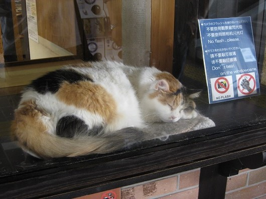
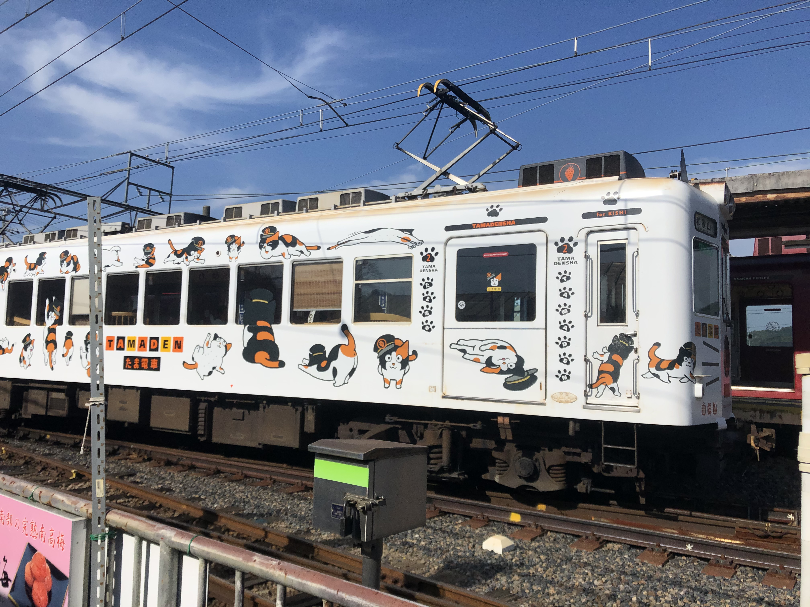
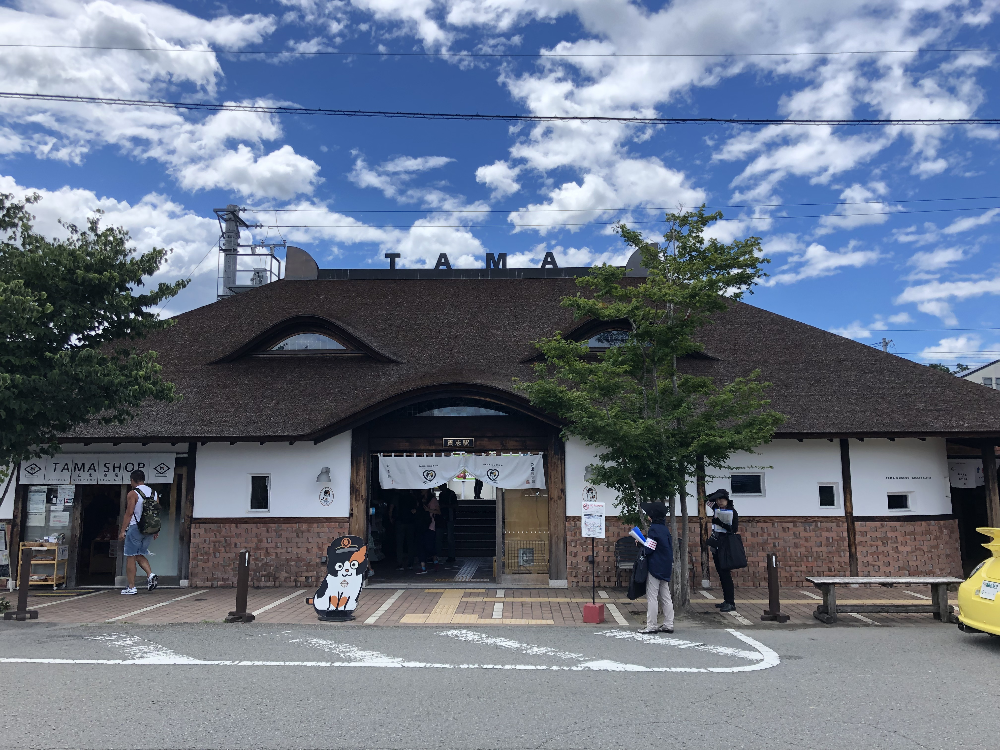
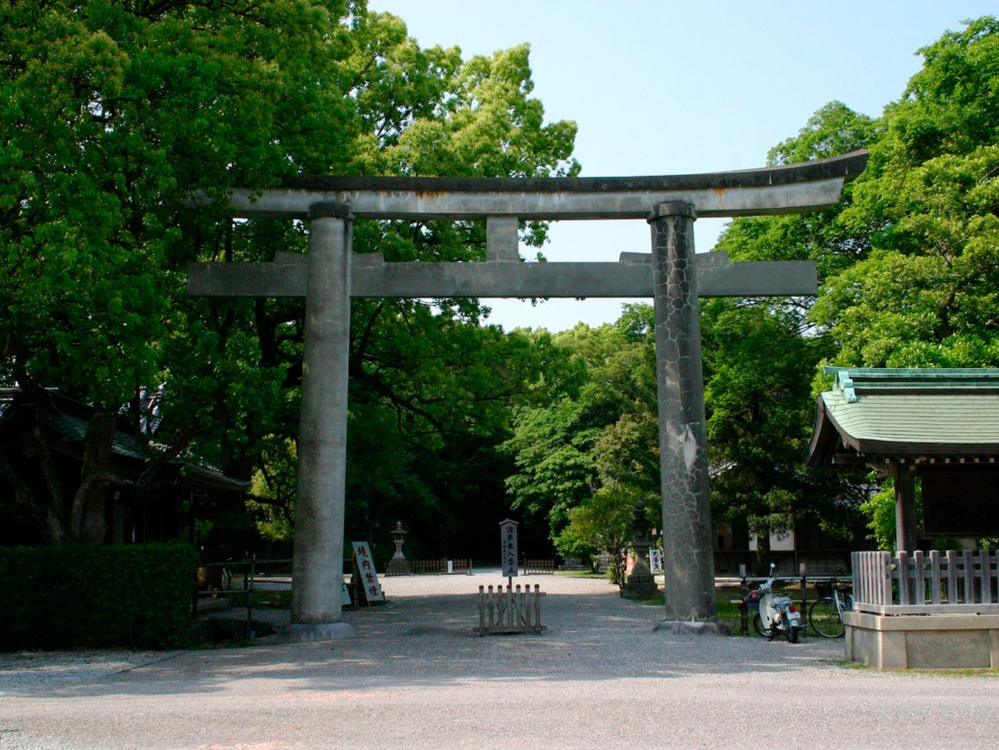
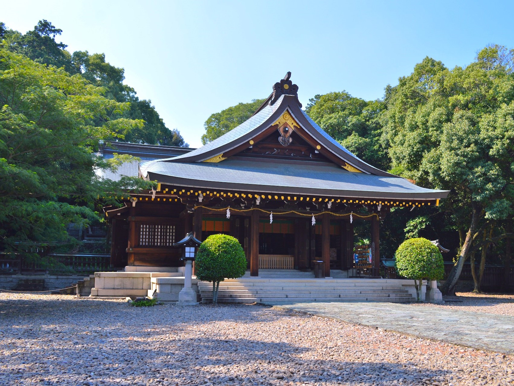

たま電車、猫の駅長…など、ユニークさで有名な貴志川線は、国内外で人気な観光路線です。
沿線には由緒ある神社仏閣が多く「古代史街道貴志川線」とも呼ばれています。
かつて廃線の危機に追い込まれた過去がある貴志川線が現在の姿になれたのは、
沿線住民たちの貴志川線に対する熱意があったからです。
廃線寸前から観光路線へ
初詣に日前宮（日前神宮・國懸神宮）、竈山神社、伊太祁曽神社へ三社参りをする参詣者を運ぶために、1916年に開業したのが、和歌山電鐵貴志川線の前身である山東軽便鉄道です。
数回ほど社名変更や合併を経た後、南海電鉄に引き継がれますが、マイカーの普及等が要因で、2003年、赤字経営の悪化、採算性の悪さを理由に貴志川線の廃止表明をします。
通勤や通学の貴重な交通手段であったため、自治体や沿線住民、沿線学校関係者たちが県や市、町と協力し路線の存続を強く訴えました。
そして、行政による経営者の公募を経て、2006年から岡山県の両備ホールディングスが引き継ぎ、現在の「和歌山電鐵貴志川線」に至ります。
貴志川線の見どころを紹介
ニタマ駅長
- 
- 勤務中のニタマ駅長
2007年に終点貴志駅の駅長に三毛猫の「たま」を就任させ、国内外から話題となりました。
2015年、たま駅長は他界し、現在「ニタマ」が2代目駅長として継いでいます。
ラッピング電車
- 
- たま駅長の意匠が施されたたま電車
「たま電車」「おもちゃ電車」「いちご電車」など、内装、外装ともユニークな意匠が施された列車が走っています。水戸岡鋭治さんがデザインを担当。
内装では座席や床が木製である他、カプセルトイやフィギュアケースの設置など、他の路線では見ることができない特徴があって、乗る人を飽きさせません。
貴志駅
- 
- 檜皮葺の屋根、猫耳が特徴的
たま駅長が就任し話題となった駅です。もともとはごく普通の無人駅の駅舎でしたが、
観光拠点としてふさわしいものにするため、2010年に建て替えられました。
猫耳の形をした檜皮葺屋根が特徴で、水戸岡鋭治さんがデザインを担当。
駅舎内にはたまカフェやグッズ販売店があり、駅ホームにはたま駅長を祀るたま神社が鎮座しています。
西国三社参り
三社参りとは、初詣に三つの神社に参詣する文化です。
和歌山市では古来から日前宮（日前神宮・國懸神宮）、竈山神社、伊太祁曽神社の三社に参る風習があり、西国三社参りと呼ばれます。
新体制の下で開始した貴志川線では、南海電鉄時代には重視されていなかった西国三社参りの文化に注目。三社とも古事記、日本書紀にまつわる由緒ある神社であり、そのうち二社が紀伊国一之宮に指定されています。
日前神宮・國懸神宮
- 
境内に二つの主祭神が鎮座しています。入口から見て左が日前神宮、右が國懸神宮です。別名、二つの神社を総称し「日前宮」とも呼ばれています。紀伊国一之宮。
日本神話に由来し、天照大神の岩戸隠れの際に、石凝姥命によって鋳造された御鏡が祀られています。日像鏡が日前神宮、日矛鏡が國懸神宮に祀られています。
良縁、結婚、家内安全の御利益があります。
竈山神社
- 
初代天皇である神武天皇の長兄、彦五瀬命が祀られています。
神武東征の際、激戦で流れ矢に当たって負傷し、雄水門で亡くなり、この地に葬られたことが由来です。
神社の裏には彦五瀬命の陵墓があります。
伊太祁曽神社

木の神である五十猛命が祀られています。紀伊国一之宮。
素戔嗚尊は子孫である五十猛命に、高天原から持ってきた木の種を日本中に蒔かせて、国中を樹木で満たし、後にこの地に鎮座したことが由来とされています。
このことから木の神として慕われ、林業関係者に親しまれている他、五十猛命が大国主神を災厄から救ったことから、いのちの神、厄除けの神とも慕われています。
毎年11月に開催される貴志川線祭りでは、伊太祈曽駅敷地内とこの境内で行われています。